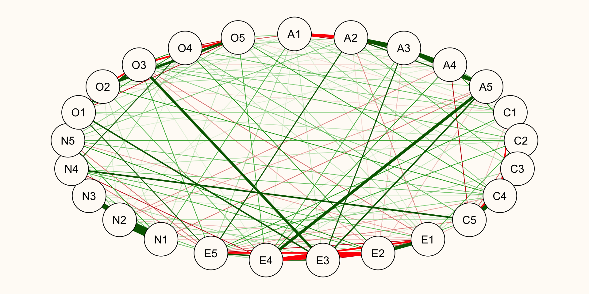

Network Psychometrics
Alex LoPilato and Ben Listyg
Overview
- Introduction to the network approach to psychometrics
- Introduction to network analysis
- Introduction to network (graphical) models
Modern Psychometric Methods
- Latent Variable Models (IRT, CFA, EFA, etc.)
- Reflective models
- Formative models
Challenges with Latent Variable Models
- Latent variable models do a poor job of specifying:
- The temporal precedence of the latent variable
- The causal response processes
- Causal associations among observed variables
The Network Approach
- Discontent with current methods led a group of researchers to introduce and build on:
- Network theories of psychological phenomena
- Network (graphical) models
Network Theories: Constructs as Dynamical Systems
Reframe theories of psychological phenomena as a dynamic system of interactions among observable variables, which are referred to as autonomous causal entities.
Most network psychometric theories pull from the literature on dynamic systems and complex systems. An example is considering depression not as a construct, but as an attractor state of the depression system.
Network (Graphical) Models
Network psychometric analysis relies heavily on a class of statistical models called graphical models to estimate the network that underlies the observed variables.
One of the most common ways to estimate the underlying network is to use a model called the Gaussian Graphical Model, which is just a partial correlation matrix.
Network Analysis
What is a Network?
Networks (graphs) are mathematical objects that represent connections among different entities.
Mathematically, networks consist of a:
- Set of nodes or vertices
- Set of edges or links
Examples of Networks
- Social Networks
- Organizational Networks
- Biological Networks
- Information Networks
What is a Psychometric Network?
- A psychometric network is a network in which the nodes are the observed variables and the edges are the conditional relationships among those observed variables.
Network Types
- We can broadly categorize networks by the directionality (or lack thereof) and weights of the edges:
- Undirected vs Directed Networks
- Unweighted vs Weighted Networks
- Psychometric network analysis typically deals with undirected and weighted networks.
Matrix Representation of a Network
The easiest way to mathematically manipulate a network is to turn it into a matrix. This matrix is referred to as an adjacency matrix.
Non-zero elements in the matrix represent connections between two nodes in the network.
Unweighted, Undirected Network
Adjacency Matrix
[,1] [,2] [,3] [,4] [,5] [,6]
[1,] 0 1 1 0 0 1
[2,] 1 0 1 1 0 0
[3,] 1 1 0 0 0 0
[4,] 0 1 0 0 1 1
[5,] 0 0 0 1 0 1
[6,] 1 0 0 1 1 0Weighted, Unirected Network

Weight Matrix
[,1] [,2] [,3] [,4] [,5] [,6]
[1,] 0.0 0.5 0.4 0.0 0.0 -0.1
[2,] 0.5 0.0 0.3 -0.3 0.0 0.0
[3,] 0.4 0.3 0.0 0.0 0.0 0.0
[4,] 0.0 -0.3 0.0 0.0 0.4 0.3
[5,] 0.0 0.0 0.0 0.4 0.0 0.2
[6,] -0.1 0.0 0.0 0.3 0.2 0.0Analyzing Networks
- Local network properties: Metrics focused on specific parts of a network
- Global network properties: Metrics focused on the network as a whole
Local Network Properties: Centrality
Centrality is a class of network metrics that measure the importance of a given node by counting and, at times, weighting the number of direct or indirect connections a node has with other nodes.
Centrality metrics can be subdivided into:
- Direct connection centrality metrics
- Indirect connection centrality metrics
Direct Connection Centrality Metrics
Degree Centrality:
\[\sum_{j=1}^{n}{a_{ij}}\]
Strength:
\[\sum_{j=1}^{n}{\lvert w_{ij}\rvert}\]
Weighted Degree Centrality:
\[\sum_{j=1}^{n}{a_{ij}^{1-\alpha}\lvert w_{ij}\rvert^{\alpha}}\]
Expected Influence:
\[\sum_{j=1}^{n}{a_{ij}w_{ij}}\]
Direct Connection Centrality Example
Direct Connection Centrality qgraph Example
Path Metrics
- Before we can calculate the indirect connection centrality metrics, we first need to understand path metrics:
Length: The distance between two nodes.
\[\text{Length}(i, j)=\frac{1}{\rvert w_{ij} \lvert^{\alpha}}\]
Distance: The shortest path between two nodes.
\[\text{Distance}(i, j)=min(w_{ik}+ \dots + w_{lj})\]
Indirect Connection Centrality Metrics
Closeness:
\[\frac{1}{\sum_{j=1}^{n}\text{Distance}(i,j)}\]
Betweeness:
\[\sum_{<j,k>}\frac{\text{# shortest paths from j to k that go through i}}{\text{# shortest paths between j and k}}\]
Expected Influence Two:
\[\sum_{j=1}^{n}a_{ij}w_{ij}+\sum_{j=1}^{n}a_{ij}w_{ij}\sum_{k=1}^{n}a_{jk}w_{jk}\]
Indirect Connection Centrality Example
Local Network Properties: Clustering
Clustering is a metric that looks at how often two nodes that are connected to the same focal node are also connected to one another: the friend of my friend is also my friend.
I haven’t seen this used a whole lot in psychometric network analysis.
Global Network Properties: Density
- It is often of interest to understand how connected your network is. This can be calculated using a network metric called density.
\[\text{Density}=\frac{\text{# Observed Edges}}{\text{# Possible Edges}}=\frac{\sum_{<i, j>}a_{ij}}{n(n-1)}\]
Global Network Properties: Small Worlds
- Six degrees of Kevin Bacon
- Small world network models are characterized by high clustering and short average path lengths–this does not happen when networks form completely at random.
Calculating Density and Small World Index in R
Global Network Properties: Community Detection
In network analysis, community detection is a set of algorithms that attempt to find hidden communities within a network by identifying sets of nodes that have more connections among themselves than they have with other nodes outside of the set.
Common algorithms:
- Walktrap Algorithm
- Louvain Algorithm
- Fast-Greedy Algorithm
Community Detection Example
Network Models
Network Psychometrics
In Part 1, you learned the theory and rationale and math of psychometric networks
In Part 2, we learn how to DO estimation of psychometric networks
Reminder from Part 1
Networks serve as an abstraction to represent the relationships (edges) between entities (nodes)
KEY!!!
Reminder from Part 1
Networks serve as an abstraction to represent the relationships (edges) between entities (nodes)
DISTINGUISHING!!!
Reminder from Part 1
Networks serve as an abstraction to represent the relationships (edges) between entities (nodes)
FACTOR!!!
Reminder from Part 1
In social networks, your data both nodes and edges that are observed
Obvi there are more complex situations where you have missing data
- Network missingness can be very tricky (Morrissett, 2013; Kossinets, 2006)
This is neither time nor place for that though…
Reminder from Part 1
Reminder from Part 1
I/O context:
- Teams / Co-workers
Clinical:
- We can form a network between therapist and patients in group therapy setting (Koelhy & Shivy, 1998)
Developmental
- We can form a network of how babbies interact with other babbies (Cochran & Brassard, 1979)
Psychometric Networks
When do psychometric network analysis / using psychometric network models:
All your nodes (items) are observed
You are e s t i m a t i n g the relationships (edges) between nodes (items)
Psychometric Networks
When do psychometric network analysis / using psychometric network models:
All your nodes (items) are observed
You are e s t i m a t i n g the relationships (edges) between nodes (items)
How do we do that?
There are many paths to Rome
- Start with a substantive question utilizing network theory (e.g. “I want to understand Construct X as a dynamic construct and/or complex system.”
- Sachisthal et al. (2019)
- Scientific Interests Network - Psychometric network on student’s interest in science
- Sachisthal et al. (2019)
There are many paths to Rome
There are many paths to Rome
- Theoretical perspectives on interests are all over the place.
- Interests can potentially be conceptualized as “interacting indicators of interest components…indicators of affective, behavioral, and cognitive (including value and knowledge) components”
- These indicators make up the variable of interest rather than being indicators of it
- Provides new targets for interventions
There are many paths to Rome
- Collect data
- Research designs for network psychometrics can be:
- Longitudinal (e.g. EMA design; see Emorie Beck @ UC Davis for lots of examples of this)
- Cross-sectional
- Sampling should be no different than any other psychological study
- Research designs for network psychometrics can be:
There are many paths to Rome
Analyze data
Time for F U N
Analyzing Psychometric Network Data
We can do this with raw data OR correlation matrix
Analyzing Psychometric Network Data
Rows: 6
Columns: 28
$ A1 <int> 2, 2, 5, 4, 2, 6
$ A2 <int> 4, 4, 4, 4, 3, 6
$ A3 <int> 3, 5, 5, 6, 3, 5
$ A4 <int> 4, 2, 4, 5, 4, 6
$ A5 <int> 4, 5, 4, 5, 5, 5
$ C1 <int> 2, 5, 4, 4, 4, 6
$ C2 <int> 3, 4, 5, 4, 4, 6
$ C3 <int> 3, 4, 4, 3, 5, 6
$ C4 <int> 4, 3, 2, 5, 3, 1
$ C5 <int> 4, 4, 5, 5, 2, 3
$ E1 <int> 3, 1, 2, 5, 2, 2
$ E2 <int> 3, 1, 4, 3, 2, 1
$ E3 <int> 3, 6, 4, 4, 5, 6
$ E4 <int> 4, 4, 4, 4, 4, 5
$ E5 <int> 4, 3, 5, 4, 5, 6
$ N1 <int> 3, 3, 4, 2, 2, 3
$ N2 <int> 4, 3, 5, 5, 3, 5
$ N3 <int> 2, 3, 4, 2, 4, 2
$ N4 <int> 2, 5, 2, 4, 4, 2
$ N5 <int> 3, 5, 3, 1, 3, 3
$ O1 <int> 3, 4, 4, 3, 3, 4
$ O2 <int> 6, 2, 2, 3, 3, 3
$ O3 <int> 3, 4, 5, 4, 4, 5
$ O4 <int> 4, 3, 5, 3, 3, 6
$ O5 <int> 3, 3, 2, 5, 3, 1
$ gender <int> 1, 2, 2, 2, 1, 2
$ education <int> NA, NA, NA, NA, NA, 3
$ age <int> 16, 18, 17, 17, 17, 21Analyzing Psychometric Network Data
Analyzing Psychometric Network Data
Analyzing Psychometric Network Data
The previous network was an unregularized
This means all edges were estimated, even super tiny ones
But, what happens if we ~ regularize ~ it?
Analyzing Psychometric Network Data
Quick aside:
What is regularization?
A process of “shrinking” tiny values towards zero.
Analyzing Psychometric Network Data
What we can see is that the correlation matrix is much more “sparse”
There are substantially more 0’s all over the place and the previously bigger values are smaller than before.
Analyzing Psychometric Network Data
What does this regularized network look like?
Analyzing Psychometric Network Data
Why do we regularize?
Separating signal from noise
We know everything is (to a degree) correlated with everything
Regularization helps siphon the signal from the noise and what’s left over is “truth” and aid with selecting the “true” model.
Analyzing Psychometric Network Data
Now that we’ve estimated a psychometric network… what can we do?
1) Estimate global network properties
2) Estimate individual node properties
Analyzing Psychometric Network Data
1) Estimate global network properties
Example: Smallworldness
Substantive value: Lots of networks have smallworld properties (see Jonathan Kleinberg or Aaron Clauset’s work on this for example of small-world networks all over the place). A smallworld network implies any two nodes in the network can reach each other through a short sequence of other nodes (Kleinberg, 2001)
Daleage et al. (2016) demonstrate that attitudinal networks display smallworld characteristics
Carter et al. (2020) demonstrate the utility of smallworld networks for predicting turnover
.
smallworldness 1.0312508
trans_target 0.5317888
averagelength_target 1.4800000
trans_rnd_M 0.5156945
trans_rnd_lo 0.4929876
trans_rnd_up 0.5398707
averagelength_rnd_M 1.4800600
averagelength_rnd_lo 1.4800000
averagelength_rnd_up 1.4833333Analyzing Psychometric Network Data
2) Estimate individual node properties
Betweenness Closeness
N4 72 0.002830050
N3 62 0.002534412
C5 57 0.002721057
E4 54 0.002948168
A3 48 0.002689122
A2 46 0.002580368Analyzing Psychometric Network Data
Additional things you can do with networks:
Community Detection
- Do different nodes “hang out” together?
Analyzing Psychometric Network Data
Network Comparison Test (NCT)
Do different groups have the same / different network structures?
BIG open area for research imo
Lots of existing work on graph comparisons in CS / Stats
How does it translate to psychometric data?
- Cosma Shalizi is prolific in this space
Some Critiques of Psychometric Network Analysis
- Model Selection: Are network models appropriate for psychological data?
- Study Design: Can we infer anything about a dynamical system from cross-sectional data?
- Estimation Reliability: How stable/replicable are psychometric networks?
- Interpretation of Measures: Can we even interpret network metrics applied to psychometric networks?